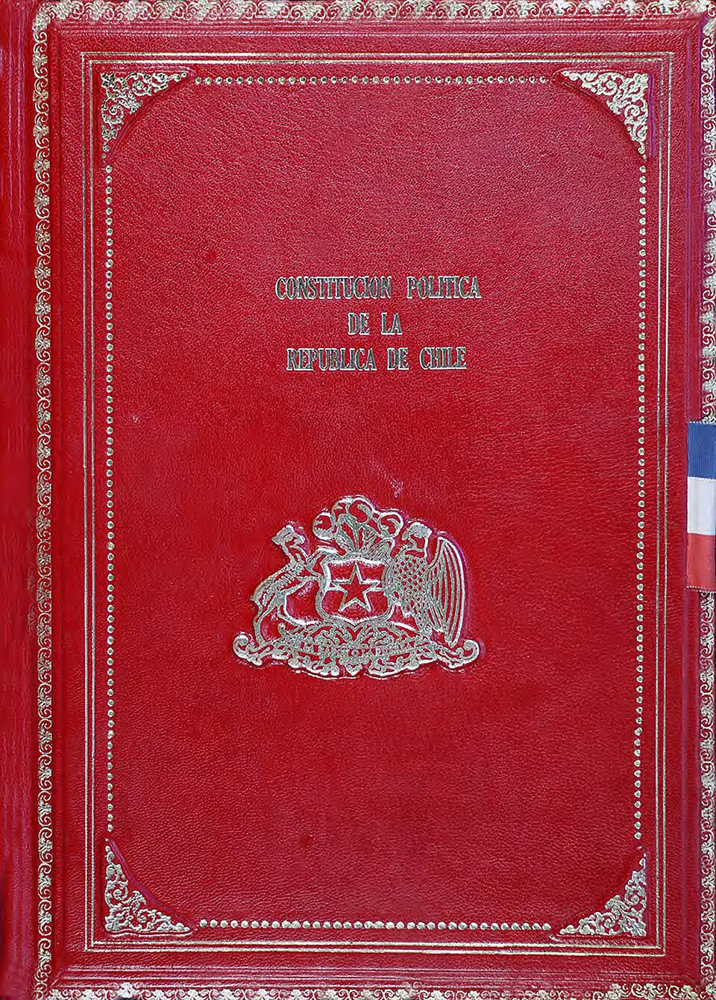

Constitución de 1980

La Constitución de 1980 fue elaborada durante la dictadura a partir del trabajo de la Comisión de Estudio de la Nueva Constitución (Comisión Ortúzar), en la que tuvo gran influencia el abogado Jaime Guzmán, y fue revisada por el Consejo de Estado y la Junta Militar. Se aprobó en un plebiscito el 11 de septiembre de 1980, realizado sin registros electorales, bajo estado de excepción y con fuertes restricciones a la oposición; según las cifras oficiales, la opción Sí obtuvo cerca de dos tercios de los votos. Entró en vigencia el 11 de marzo de 1981. Sus disposiciones transitorias mantuvieron a Augusto Pinochet en la presidencia por ocho años y previeron el Plebiscito de 1988. Estableció una "democracia protegida": senadores designados, un Consejo de Seguridad Nacional con participación militar, inamovilidad de los comandantes en jefe, un Tribunal Constitucional fuerte y leyes orgánicas con quórums elevados. Fue reformada en 1989, de manera amplia en 2005 y en muchas otras ocasiones. Sus defensores destacan la estabilidad institucional que dio al país; sus críticos cuestionan su origen y los llamados "enclaves autoritarios". Ese debate llevó a los Procesos constitucionales de 2020 a 2023, cuyas propuestas fueron rechazadas, por lo que sigue vigente.
Versión para niños
En 1980, el gobierno militar presentó una nueva Constitución, la ley más importante del país. Fue aprobada en un plebiscito, pero en esa votación no había registros electorales y quienes se oponían tenían muy poca libertad para hacer campaña. Esta Constitución estableció que en 1988 habría otro plebiscito para decidir si Augusto Pinochet seguía gobernando. Con muchos cambios hechos después en democracia, sigue siendo la Constitución de Chile.
Para maestros
Nivel sugerido: 2° medio
Objetivo: Analizar el origen, las características y las reformas de la Constitución de 1980, considerando el debate sobre su legitimidad.
Preguntas para la clase:
- ¿Qué condiciones debería cumplir un plebiscito para ser considerado libre y justo?
- ¿Qué instituciones de la Constitución de 1980 fueron reformadas en democracia y por qué?
- ¿Por qué una parte de la sociedad sigue debatiendo sobre la Constitución?
Actividad (20–30 min): En grupos, los estudiantes comparan las condiciones del plebiscito de 1980 con las del plebiscito de 1988 (registros electorales, propaganda, acceso a la televisión, conteo de votos) y concluyen qué elementos hacen confiable una votación.
Fuentes sugeridas: Biblioteca del Congreso Nacional (BCN); Memoria Chilena; Museo de la Memoria y los Derechos Humanos.
Objetivos de Aprendizaje (Currículum Nacional)
- 6° básico · HI06 OA 08 Comparar diferentes visiones sobre el quiebre de la democracia en Chile, el régimen o dictadura militar y el proceso de recuperación de la democracia
- 6° básico · HI06 OA 16 Reconocer que la Constitución Política de Chile establece la organización política del país y garantiza los derechos y las libertades de las personas
- 2° medio · HI2M OA 18 Analizar la nueva institucionalidad política creada por la Constitución de 1980, considerando los artículos transitorios
Personajes
Revisión humana pendiente. Cómo se revisa · Reportar un error
Cómo citar: Historia de Chile. (2026). Constitución de 1980. En Historia de Chile: atlas y línea de tiempo. https://moises-salgado.github.io/historia-de-chile/momento/constitucion-de-1980.html